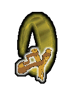

Note
Nata a bordo della nave del padre, figlia di un mercante Romulano (Tahn) e di una terestre (Katherine 'Kat' Sheridan), è figlia unica (è pure troppa, hanno detto di lei i suoi genitori).
All'età di 19 anni, stanca di fare il mozzo di bordo sulla nave del padre, e perché vuole conoscere qualcos'altro, e, soprattutto, dietro le insistenze dei genitori, ha chiesto di entrare nella Flotta Stellare, ma viene respinta perché Romulana; ci riprova l'anno successivo, con "l'appoggio" dell'ex proconsole M'Ret dell'Impero Romulano, da qualche anno l'unico Romulano a far parte del Consiglio della Federazione.
Ebbe uno shock quando scoprì tra gli insegnanti dell'Accademia un Klingon (non li può proprio vedere) che insegnava nel corso di Ingegneria; a causa di ciò, i suoi voti in Ingegneria furono sempre molto scarsi, ed anche perché non partecipava quasi mai alle lezioni.
Nonostante tutto, riuscì a diplomarsi all'Accademia.
La sua vita in Accademia fu abbastanza solitaria; fece amicizia solo con la sua compagna di stanza: Fabiola Renzi.
È molto sportiva, ma non parlatele di calcio, non ci ha mai capito niente; è, al contrario, esperta nell'arte marziale romulana 'Sehte Piohte Spack Loshsa' e quando non ha nulla da fare, la si può trovare in Sala Ologrammi ad allenarsi.
Non ha avuto relazioni di rilievo, anzi: chi le si è avvicinato troppo è ancora in prognosi riservata (i più fortunati).
Il suo, più che un alloggio è un vero e proprio magazzino: ha di tutto, e anche qualcosa di più, dopotutto è figlia di un mercante.
È ultraprotettiva verso la nave ed il Capitano: per lei non devono correre alcun rischio, anche se il STen Alighieri è immortale.
È alquanto perplessa per il fatto di avere come Primo Ufficiale una grossa pietra ma, si è detta, 'meglio lei di un Klingon'.
Incarichi
- Capo della Sicurezza - USS AFRODITE NCC-1863.